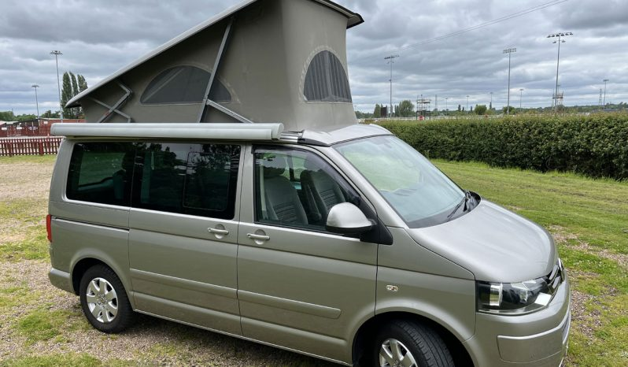

Calverton · Nottinghamshire
Campervans
for the
long way round
Trade Leisure buys and sells well-cared-for, professionally converted campervans. Every one is HPI checked, freshly serviced and backed by a 12-month Autoguard parts & labour warranty — viewed one-to-one, no forecourt patter.

▸ Volkswagen California SE (Ocean) · Nov 201301 / Available now
In stock today
Each van is HPI checked, freshly serviced and ready to drive away with a 12-month warranty. Tap one for the full log, photos and price — then call to book an unhurried viewing.
See all live stock on AutoTraderRecently sold
Gone to good homes
A flavour of what's passed through recently — good stock doesn't hang about. Tell us what you're after and you'll be first to hear when the right one lands.
After something specific? A T6.1 Highline, an auto box, a 5-seater for the school run — say the word and we'll keep watch on our trade sources.
Register your interest02 / Selling
Got a campervan to sell?
We pay top trade prices for well-cared-for, professionally converted VW and Ford campervans up to 10 years old — it's half of what we do. Fill in the details and Mike will come back with a no-obligation offer, usually within 24 hours.
- A fair, honest valuation — no obligation, and free to value your camper.
- Instant bank transfer & free collection — outstanding finance settled on the day.
- No listing fees, no timewasters — and no strangers turning up at your door.
Prefer to talk? Call 07813 696011 or send photos on WhatsApp.
Not a forecourt — a small dealership that only takes on vans worth putting a name to.
03 / About Trade Leisure
Trade Leisure is a small, independent campervan dealer based in Calverton, Nottinghamshire. We carefully source quality professional conversions — VW Transporters mostly, with the odd Ford Custom or California — and only those that have been genuinely well maintained and cared for.
Every van is HPI checked, serviced and MOT'd where due, gas-safety certificated, and sold with a 12-month Autoguard parts & labour warranty. Viewings are one-to-one and by appointment, so you can take your time, lift the cushions, and ask the awkward questions.
Buying or selling, you deal with the same person from first call to handover.
04 / Reviews
Rated 5.0 by buyers
Mike was honest, professional, friendly and knowledgeable on all aspects of the vehicle.
Great campervan. Very professional, friendly and knowledgeable service. Fast and easy purchase. Highly recommend.
Mike is a joy to deal with — nothing is too much trouble and everything he says he will do happens.
The van was exactly as described and I would not hesitate to recommend Mike as a very trustworthy dealer.
Mike was excellent to deal with. Very straightforward, all questions answered, smooth process. Very trustworthy.
Excellent communication, vehicle exactly as described — my buying experience was made very easy.
05 / FAQ
Common questions
Buying or selling, here are the things people ask most. Anything else — just call or drop Mike a message.
What campervans does Trade Leisure buy?
We buy well-cared-for, professionally converted VW and Ford campervans up to 10 years old. We don't buy DIY conversions.
How does selling to you work?
Fill in the 'sell your campervan' form with a few photos and you'll get a no-obligation offer, usually within 24 hours. If you're happy, we'll arrange to view the van, then pay by instant bank transfer and collect it — free of charge.
Why should I sell to Trade Leisure?
We're a registered company with excellent feedback. You get a competitive offer, instant payment and free collection, any outstanding finance settled on the day, and none of the hassle or time-wasters that come with selling privately.
How will I get paid?
By instant bank transfer, straight into your account, on the day we collect the van.
Are there any hidden costs?
None. You're under no obligation to accept our offer, and we never charge anything to value your campervan.
Do your vans come with a warranty?
Yes — every van we sell is HPI checked, serviced where due and comes with a 12-month Autoguard parts & labour warranty, plus a gas safety certificate on conversions.
06 / Contact
Come and see the vans
Viewings are by appointment — call, message or drop us a line below and we'll sort a time that suits. Honest answers, no pressure, kettle's on.
- Phone / WhatsApp07813 696011
- Location · 53.03°N 1.08°W129 Flatts Lane, Calverton, NG14 6LA
- Live stockView on AutoTrader
- ViewingsBy appointment, seven days